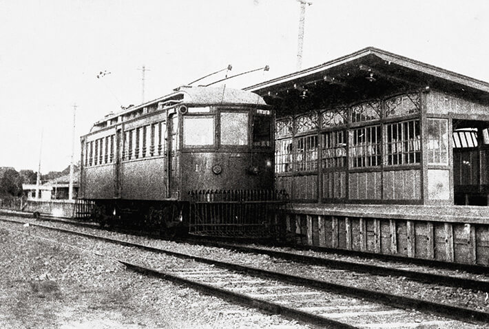
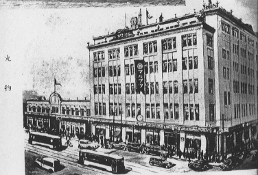
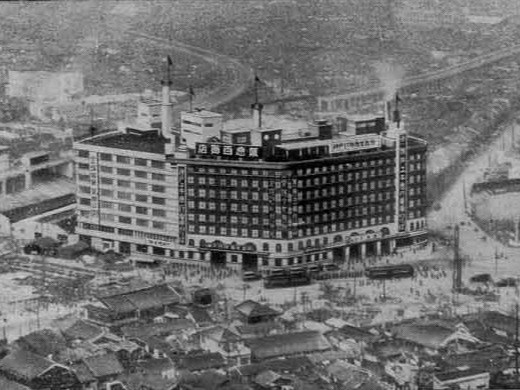

HISTORY
沿革
1902年の創業から、120年以上。
埼京電鉄は、街とともに歩んできました。
-
1902
大宮川越軌道 創業
鉄道による運輸が主流になりつつあった明治の時代。大宮と川越を繋ぐことを目的とし中尾 虎麿率いるメンバーによって浦和川越軌道が設立された。
IMAGE -
1904
電気供給事業の開始
埼玉県下初の100kW出力の発電機2基による川越火力発電所（出力260kW）を建設。
翌年1月から川越町内431戸での電灯供給を開始した。 -
1906
川越久保町(現:埼京川越)-大宮間が開業
当初馬車軌道での開業を予定していたが電気供給事業の参入に合わせ計画を変更。埼玉県で最初の電化路線として開業した。

開業時の電車と大宮駅の様子
-
1908
東京への延伸免許を取得
電気供給事業は盛業であったが鉄軌道の収益は苦しい状況であった。そこで利便性改善による乗客数増加策として1907年大宮から都内までの路線計画を打ち出し、翌年には省線西側にある与野、浦和、蕨、板橋の市街地付近を通り大塚駅で山手線と接続し、小石川春日付近に至る路線の免許が状下された。
IMAGE -
1911
大宮-新浦和(現:埼京浦和)間が開業
社名を埼京電気軌道に変更し開業した。当時県下最大都市であった川越、交通の要衝大宮、県庁所在地の浦和がつながり利用客は大きく増加した。

2代目の車両
-
1919
新浦和(現:埼京浦和)-戸田間が開業
この時点で資金難に悩まされており、新規開業区間は計画では複線だったが急遽単線とし、蕨宿(現:埼京蕨)駅の建設資金のために創業者の中尾虎麿は自身の保有する家を売却した。
-
1923
不動産事業の開始
板橋区エリア開業予定の本線沿線での住宅地の分譲を開始。同年に発生した関東大震災による郊外の住宅需要の高まりの影響もあり成功を収め同事業を拡大。土地を担保に銀行からも多額の融資を受けた。
-
1923
池袋-志村一里塚間が開業
荒川放水路が建設途中であったため先に都心側からの建設としたが、小石川春日をターミナルとする計画は頓挫しスペースに余裕のあった池袋駅にターミナルが変更された。
IMAGE -
1924
武州鉄道を合併する
蓮田から神根駅(現:西立野)までの路線を保有していた武州鉄道を合併し、同路線を蓮田線に名称変更。
-
1925
蓮田線を神根から埼京川口まで延伸開業
このとき同路線は全線が電化された。
-
1929
バス事業の開始
路線沿線にバス路線を展開した。
-
1930
埼京本線が全線開通
志村一里塚-戸田間の開業により埼京本線が全線開通した。
これを記念して創業者の中尾虎麿は家を買い戻した。
開業時の池袋駅舎。この時点では駅舎もホームも現在より100メートルほど北に位置した。
-
1931
蓮田線が全線開通
埼京川口-埼京板橋間が開業し蓮田線が全線開通した。

建設中の荒川橋梁
-
1931
埼京百貨店池袋店がオープン
駅直結型の百貨店としてオープンし大いに賑わった。

この建物のすぐ裏にホームが設置された
-
1932
埼京山手線の計画を開始
東京の西側(山手)の大きな発展を見据え渋谷駅までの乗り入れを計画。
-
1935
埼京百貨店新宿店がオープン
池袋店の成功を受け続けて新宿店をオープンした。また、新宿までの路線延伸を見据えて建物2階はホームが設置できる構造で建設された。

当時としてはかなり巨大な建物であった。
-
1937
埼京山手線が新宿駅まで開業
2年前に開業した埼京百貨店新宿店に乗り入れる形で新宿駅が開業。正式名称は埼京山手線だが当時から全列車が本線から直通運転をしているため本線として案内されている。
またこれに合わせて電車の長編成化や複線化が実施された。当時としてはかなり巨大な建物であった。
-
1940
社名を埼京電気鉄道株式会社に変更
-
1942
東武鉄道に合併
陸上交通事業調整法施行による戦時統合として東武鉄道に吸収合併された。
-
1946
東武鉄道から再独立
終戦後、私鉄分割への機運の高まりを受け再独立をした。このときに設立された株式会社埼京電気鉄道が現在の当社である。
-
1948
東京証券取引所上場
-
1950
バス事業の大規模拡大
終戦後に道路整備が大きく進んだことを受け路線バスの路線網を埼玉県を中心に大規模拡大した。また、沿線などから観光地を結ぶバス路線やバスツアー事業も開始した。
キャプション
-
2026
現在
これからも、街とともに。